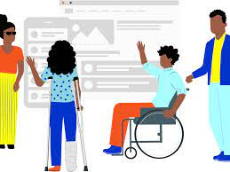

Servicio Nacional de Aprendizaje
SENA.

Proyecto
Crear una página web que tenga la capacidad de ayudar a las personas con discapacidad auditiva que no sepan leer, y puedan entender por medio de señas o
también para que ellas personas que sufren accidentes
y quedan con esta discapacidad para que puedan aprendan el lenguaje de señas, y se les pueda facilitar entender a las otras personas qu también tienen esta discapacidad